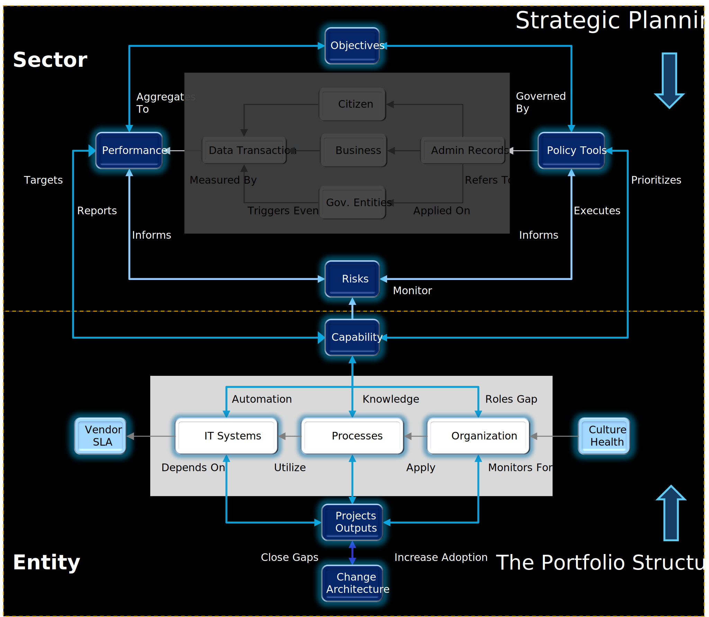

In our previous episode, we established how macro-strategic objectives, like those in Vision 2030, are translated into a cascade of measurable KPIs. However, setting targets is only half the battle. The critical question remains: how does an organization ensure that the daily work of its teams—the projects, tasks, and activities—is perfectly aligned to move those KPIs?
This is the function of a Transformation Portfolio. A portfolio is not merely a list of projects; it is the disciplined control system that translates strategy into funded work, tracks the outputs, and ensures they deliver measurable outcomes. It is the essential bridge between the ambition of strategy and the reality of action.
The four-level portfolio hierarchy: Portfolio → Program → Initiative → Deliverable
To manage complexity and ensure clear accountability, work must be organized into a strict, four-level hierarchy. This structure is foundational to the entire transformation architecture and is how the workstream is modeled in the enterprise's Digital Twin.
| Level | Purpose | Typical Owner | KPI Focus |
|---|---|---|---|
| L0 Portfolio | Sets strategic investment themes and allocates budgets (e.g., Digital Government Modernisation). | Executive Steering Committee / Ministry Board | Strategic KPIs |
| L1 Program | Groups related initiatives under one thematic objective (e.g., Digital Licensing). | Program Management Office | Leading KPIs |
| L2 Initiative | A time-bound effort that produces one or more deliverables (e.g., Launch National e-Portal). | Initiative Sponsor / Project Director | Operational KPIs |
| L3 Deliverable | A concrete output that operations will consume (e.g., Master Deliverable: e-Portal live & secure). | Project Team Lead | Process Metrics |
The Master Deliverable is a critical concept. Each initiative must have ONE output flagged as its non-negotiable product or service. This is the deliverable that, once embedded into daily operations, will directly impact an L3 process and its corresponding metric. All other outputs, such as training manuals, pilot tests, and communication plans, exist only to support the successful deployment and adoption of this Master Deliverable.
In many organizations, portfolio management is a political exercise, where the loudest voice or the most powerful department secures funding. An architected approach replaces this subjectivity with data-driven discipline, but to do so, we must bust a persistent myth.
| Myth | Reality |
|---|---|
| Finishing the list of initiatives means the transformation is done. | Initiatives are merely inputs. Transformation happens only when Master Deliverables are fully absorbed into daily processes and measurably shift the target KPIs. The goal is not to "finish projects," but to "change the numbers." |
| Any deliverable can be the focus. | Only the Master Deliverable creates lasting value by directly linking to an L3 process and a measurable KPI. Everything else is transitional—and exists only to support that outcome. |
A transformation portfolio, managed through the discipline of Strategic Portfolio Management (SPM), is the organization's primary tool for managing investment risk. Every riyal spent on an initiative that is not explicitly linked to a strategic KPI is a wasted investment. The SPMO's role is therefore not just to track progress, but to provide value assurance—ensuring that the organization is funding the right things to achieve the right outcomes.
Key SPM disciplines include:
The Master Ontology showing how portfolio structure integrates with KPIs, processes, and organizational capabilities